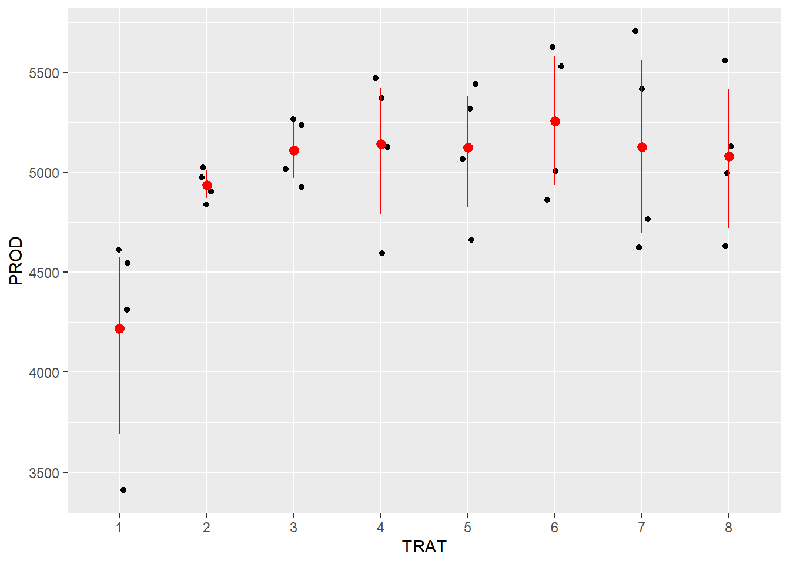

library(gsheet)
library(dplyr)
Anexando pacote: 'dplyr'Os seguintes objetos são mascarados por 'package:stats':
filter, lagOs seguintes objetos são mascarados por 'package:base':
intersect, setdiff, setequal, unionlibrary(ggplot2)
library(DHARMa)This is DHARMa 0.4.7. For overview type '?DHARMa'. For recent changes, type news(package = 'DHARMa')library(emmeans)Welcome to emmeans.
Caution: You lose important information if you filter this package's results.
See '? untidy'library(multcomp)Carregando pacotes exigidos: mvtnormCarregando pacotes exigidos: survivalCarregando pacotes exigidos: TH.dataCarregando pacotes exigidos: MASS
Anexando pacote: 'MASS'O seguinte objeto é mascarado por 'package:dplyr':
select
Anexando pacote: 'TH.data'O seguinte objeto é mascarado por 'package:MASS':
geyserlibrary(agricolae)
campo <- gsheet2tbl("https://docs.google.com/spreadsheets/d/1bq2N19DcZdtax2fQW9OHSGMR0X2__Z9T/edit?gid=866852711#gid=866852711")
campo <- campo |>
mutate(
TRAT = factor(TRAT),
BLOCO = factor(BLOCO),
FER = as.numeric(FER)
)
ggplot(campo, aes(x = TRAT, y = PROD)) +
geom_jitter(width = 0.1) +
stat_summary(fun.data = "mean_cl_boot", colour = "red")